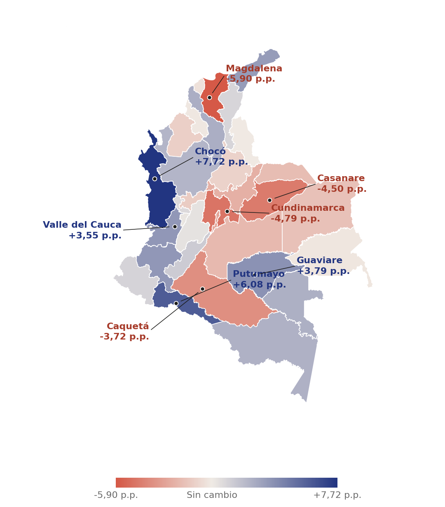

La mujer que hoy encabeza un hogar en Colombia probablemente vive en una ciudad, es madre; en muchos casos no tiene pareja y asume sola buena parte de las responsabilidades económicas de su familia. También es probable que en su casa viva un niño pequeño o una persona adulta mayor que requiere cuidados permanentes. Y, más que los hombres en la misma posición, siente que el dinero no alcanza, que su situación económica se ha deteriorado y que alimentar a su hogar es cada vez más difícil.
Lejos de ser una realidad desde el margen, este perfil representa a millones de mujeres. De acuerdo con la Encuesta de Calidad de Vida 2025, en Colombia, 8,8 millones de hogares están liderados por mujeres, el equivalente al 46,4% del total nacional. En ellos viven 24,6 millones de personas, casi la mitad de la población del país.
Son casi nueve millones de hogares en los que una mujer sostiene el día a día. No una pareja, no un hombre, ella. Es quien responde por el arriendo, organiza los cuidados, acompaña las tareas escolares, paga las cuentas del mes y toma las decisiones necesarias para que el hogar siga adelante.
El cambio ha sido acelerado. Hace poco más de una década, en el 2016, la brecha en la proporción entre hombres y mujeres al frente de los hogares era de alrededor 30,4 p.p., hoy la diferencia es de apenas siete puntos porcentuales y en varios departamentos las mujeres ya son mayoría entre quienes sostienen económica y organizativamente a sus familias.
En menos de una década, la jefatura femenina pasó de un tercio a casi la mitad de los hogares
Hogares por sexo de la jefatura, % del total nacional · 2010–2025
A primera vista, estas cifras podrían interpretarse como una señal de autonomía y avance para las mujeres. Sin embargo, una mirada más detallada revela una realidad más compleja. El aumento de la jefatura femenina coincide con mayores niveles de monoparentalidad, mayores cargas de cuidado, menores ingresos y una mayor exposición a la pobreza y la inseguridad alimentaria.
El crecimiento de la jefatura femenina plantea una paradoja, nunca tantas mujeres habían estado al frente de tantas familias en Colombia. Sin embargo, nunca había sido tan evidente la distancia entre la responsabilidad que asumen y los recursos con los que cuentan para ejercerla.
Este cambio podría leerse como una historia de transformación social y mayor autonomía femenina, pero una mirada más profunda obliga a preguntarse si Colombia está redistribuyendo el liderazgo dentro de los hogares más rápido de lo que está redistribuyendo las oportunidades para quienes los sostienen.
La pregunta de fondo, entonces, no es quién encabeza los hogares, es qué ocurre cuando una proporción creciente de familias depende de mujeres que siguen enfrentando mayores obstáculos que los hombres para generar ingresos, acumular patrimonio, acceder a sistemas de protección social y conciliar el trabajo remunerado con las responsabilidades de cuidado.
En otras palabras, si las mujeres están asumiendo en mayor medida el papel de sostén de los hogares colombianos, ¿por qué la desigualdad entre hombres y mujeres sigue determinando las condiciones bajo las cuales ejercen ese liderazgo?
Quiénes son las mujeres que sostienen la mitad de los hogares colombianos
Ella es soltera, vive en la ciudad y carga con más personas dependientes
La imagen tradicional del jefe de hogar como un hombre proveedor ya no describe la realidad colombiana. Si hubiera que dibujar el retrato estadístico de una jefa de hogar en Colombia, probablemente aparecería una mujer con hijos, sin pareja y responsable del cuidado de otras personas además de sí misma. Es una realidad que comparten millones de mujeres que hoy sostienen económica y familiarmente a cerca de la mitad de la población del país.
Los resultados de la Encuesta de Calidad de Vida permiten construir un perfil bastante claro. Cuando una mujer jefa de hogar vive con otros, no convive en el esquema de pareja típico, vive, predominantemente, en hogares monoparentales. Es decir, ella sola liderando, sus hijos y otros familiares.
Entre las mujeres que encabezan hogares, el 43,2% lidera hogares monoparentales, una proporción ocho veces superior a la observada entre los hombres (5,3%).
monoparentales
monoparentales
La diferencia es significativa porque detrás de ella hay dos formas muy distintas de asumir las responsabilidades familiares. Mientras la mayoría de los hombres jefes de hogar vive en hogares biparentales, donde las tareas económicas y de cuidado pueden compartirse con otra persona adulta, entre las mujeres es mucho más frecuente encontrar hogares donde una sola persona debe responder por el bienestar de toda la familia.
El estado civil ayuda a entender esta realidad. El 65,3% de las jefas de hogar son solteras, una proporción que entre los hombres se reduce al 30,1%. En contraste, mientras apenas el 12,2% de las mujeres está casada y el 22,4% vive en unión libre, entre los hombres estas proporciones ascienden al 31,8% y al 38,1%, respectivamente. Aunque la jefatura femenina incluye trayectorias diversas, los datos muestran que una parte importante de las mujeres que sostienen hogares lo hace sin una pareja con quien compartir las responsabilidades cotidianas.
Además, una jefa soltera tiene en promedio 2,4 personas a su cargo. Un jefe soltero, apenas 1,6. La brecha significa que las mujeres en solitario tienen, sistemáticamente, más bocas que alimentar y más cuerpos que cuidar que los hombres en la misma situación de soltería.
La maternidad termina de completar este retrato. El 86,8% de las jefas de hogar son madres, lo que equivale a más de 7,6 millones de mujeres que, además de asumir la principal responsabilidad económica de sus familias, tienen hijos.
Encabezar un hogar implica mucho más que aportar los ingresos principales. También supone garantizar el cuidado, la crianza, la organización cotidiana y el bienestar de quienes dependen de él. Los datos muestran que mujeres y hombres asumen cada vez más este rol, pero no lo hacen en las mismas condiciones.
No es menor que el bienestar de cerca de la mitad de las personas en Colombia dependa de mujeres que, con frecuencia, enfrentan estas responsabilidades en solitario. En los hogares encabezados por mujeres viven 24,6 millones de personas, lo que significa que las oportunidades, la seguridad económica y las condiciones de vida de millones de niños, niñas, adolescentes, personas mayores y adultos están estrechamente ligadas a la capacidad de estas mujeres para sostener sus hogares.
Desde una perspectiva de desarrollo, esta realidad resulta particularmente relevante. Los hogares son espacios donde se crean los primeros habilitantes para generar ingresos; son ese lugar donde se producen cuidados, se forman capacidades, se acumulan activos y se construyen las oportunidades que determinan el bienestar presente y futuro de las personas. Cuando la responsabilidad de sostener ese hogar recae principalmente sobre una sola persona, también se concentran sobre ella buena parte de los riesgos asociados a su bienestar, por lo tanto, subyace la mayor vulnerabilidad intrínseca.
Trabajo de cuidado no remunerado
El tiempo de dedicación también define las oportunidades
Las responsabilidades de las jefas de hogar no terminan en la provisión económica. Para una parte importante de ellas, sostener a sus familias también implica responder por las necesidades de quienes requieren mayores niveles de atención y cuidado.
Más de la mitad de los hogares encabezados por mujeres (52,2%) convive con al menos una persona menor de cinco años o mayor de 60 años. Entre los hogares liderados por hombres esta proporción se reduce al 47,2%. Aunque la diferencia puede parecer moderada, equivale a cientos de miles de hogares adicionales donde las jefas deben combinar la responsabilidad de generar ingresos con la atención de personas que requieren mayores niveles de cuidado.
En total, cerca de 4,6 millones de hogares con jefatura femenina combinan la responsabilidad de generar ingresos con la atención cotidiana de personas que requieren mayores niveles de apoyo y acompañamiento.
De nuevo con tendencia a hacerlo en solitario, la presencia de niños pequeños y adultos mayores no implica necesariamente que las mujeres sean las únicas cuidadoras. Sin embargo, los datos anteriores permiten entender por qué la carga de cuidado adquiere una relevancia particular en los hogares encabezados por mujeres. Con mayor frecuencia que los hombres, ellas lideran hogares monoparentales, viven sin pareja y son madres. En ese contexto, las posibilidades de redistribuir las responsabilidades familiares suelen ser más limitadas.
El tiempo es uno de los recursos más importantes para construir bienestar. La posibilidad de acceder a mejores empleos, continuar estudiando, emprender, participar en espacios comunitarios o simplemente descansar depende, en buena medida, de cuánto tiempo queda disponible una vez cubiertas las necesidades básicas del hogar. Cuando una misma persona concentra la responsabilidad de proveer recursos y responder por el cuidado de quienes dependen de ella, las restricciones de tiempo se convierten también en restricciones para generar ingresos, acumular patrimonio y ampliar sus oportunidades futuras.
Si el bienestar de cerca de la mitad de la población colombiana depende de mujeres que, con frecuencia, enfrentan solas la responsabilidad de sostener sus hogares, la siguiente pregunta es inevitable:
¿Disponen de los mismos recursos económicos que los hombres para asumir esa tarea?
Jefa de hogar
ingreso per cápita mensual
promedio · 2025
Jefe de hogar
ingreso per cápita mensual
promedio · 2025
Los datos sugieren que no. Aunque las mujeres asumen cada vez más la responsabilidad económica de sus familias, continúan haciéndolo con menos recursos. En 2025, el ingreso per cápita promedio en los hogares encabezados por hombres alcanzó los $1,75 millones mensuales, mientras que en los hogares liderados por mujeres fue de $1,48 millones. Esto significa que, por cada 100 pesos disponibles para una persona en un hogar con jefatura masculina, en un hogar con jefatura femenina hay apenas 84. La diferencia supera los $272 mil pesos mensuales por persona.
La brecha no aparece únicamente en los promedios. También se refleja en la forma como hombres y mujeres se distribuyen a lo largo de la escala de ingresos. En el decil más pobre del país, el 54% de los hogares está encabezado por mujeres, mientras que los hombres representan el 46%. Sin embargo, esta relación se invierte progresivamente a medida que aumentan los ingresos. En el decil más alto, donde se concentra la población con mayores recursos económicos, las mujeres representan apenas el 41,3% de las jefaturas, frente al 58,7% de los hombres.
Las mujeres son mayoría entre los hogares más pobres, pero minoría entre los más ricos. La jefatura femenina no se distribuye de forma homogénea en la escala social; se concentra, especialmente, en los eslabones más frágiles.
Las mujeres son mayoría entre los hogares más pobres y minoría entre los más ricos
Distribución de la jefatura del hogar por sexo, según decil de ingreso · 2025
No sorprende entonces que el 34,6% de las jefas de hogar afirme que los ingresos de su hogar no alcanzan para cubrir los gastos mínimos, frente al 28,4% de los hombres. Los hogares que apenas logran cubrir sus necesidades básicas suelen tener menos capacidad para acumular activos, responder a choques económicos o financiar inversiones que mejoren su bienestar futuro. Cuando esta situación afecta con mayor intensidad a quienes sostienen cerca de la mitad de la población del país, las consecuencias trascienden la situación individual de las mujeres y terminan condicionando las oportunidades de millones de personas que dependen de ellas.
En la escala más alta de satisfacción —entre 9 y 10 puntos sobre 10— se ubica el 23,4% de los jefes de hogar, frente al 19,4% de las jefas. Por el contrario, las valoraciones más bajas son más frecuentes entre las mujeres, una señal de que las dificultades económicas no solo se expresan en los ingresos disponibles, sino también en la percepción de qué tan suficientes resultan para sostener el hogar.
Afirma que los ingresos del hogar no alcanzan para cubrir los gastos mínimos
Se ubica en la satisfacción más alta con su vida (9 a 10 puntos)
Este año se implementó una pregunta en la Encuesta de Calidad de Vida que permite responder ¿por qué las personas que no están trabajando permanecen fuera del mercado laboral?
Las respuestas revelan una diferencia profunda entre hombres y mujeres. Entre los hombres que no trabajan, las razones predominantes están asociadas al ciclo de vida. El 37% se encuentra pensionado y el 31,7% se considera adulto mayor. En conjunto, cerca de siete de cada diez hombres fuera del mercado laboral dejaron de trabajar porque llegaron al final de su trayectoria laboral.
Entre las mujeres, la historia es distinta. Aunque la edad y la jubilación también tienen peso, las principales razones para permanecer fuera del mercado laboral están relacionadas con el trabajo de cuidado y las tareas domésticas. El 45,2% señala que se dedica a oficios del hogar como cocinar, limpiar o lavar ropa. A esto se suma un 12,3% que permanece fuera del mercado laboral para cuidar niños mayores de cinco años y otro 10,1% que lo hace para atender niños menores de cinco años.
Entre los hombres, en contraste, estas razones son marginales: apenas el 12% menciona los oficios domésticos y menos del 2% reporta responsabilidades de cuidado infantil o de personas dependientes.
Los hombres salen del mercado laboral por el ciclo de vida; las mujeres, por el cuidado
Principal razón para permanecer fuera del mercado laboral, por sexo · 2025
Mujeres
Hombres
Aparece el hambre
Cuando el dinero no alcanza
Las desigualdades observadas hasta ahora no son únicamente una cuestión de ingresos. También determinan la capacidad real que tienen los hogares para garantizar condiciones mínimas de bienestar.
Los datos muestran que las mujeres llegan con mayor frecuencia a la jefatura desde posiciones económicamente más frágiles. Reciben menos ingresos, tienen una mayor presencia entre los hogares de menores recursos, reportan con más frecuencia que el dinero no alcanza para cubrir los gastos básicos y enfrentan mayores restricciones para participar en el mercado laboral debido a las responsabilidades de cuidado. Cuando estas condiciones se combinan, la vulnerabilidad deja de ser una categoría estadística y comienza a manifestarse en decisiones concretas dentro de los hogares.
Una de las primeras dimensiones donde aparecen estas restricciones es la alimentación. Porque cuando los ingresos resultan insuficientes, los hogares no dejan de comer de un día para otro. Primero se preocupan por quedarse sin alimentos, luego reducen la variedad de su dieta, sustituyen productos por opciones más económicas y, en los casos más severos, disminuyen las porciones o dejan de consumir alguna comida del día.
La percepción
La pobreza tiene rostro de mujer
Las diferencias observadas en ingresos, empleo y responsabilidades de cuidado terminan reflejándose en una dimensión menos visible, pero igualmente importante, la forma en que las personas perciben su propia situación económica.
Cuando se les pregunta directamente si se consideran pobres, las mujeres responden afirmativamente con mayor frecuencia que los hombres. El 39,5% de las jefas de hogar afirma sentirse pobre, frente al 35,9% de los jefes. En términos absolutos, esto significa que cerca de 3,5 millones de mujeres que sostienen hogares consideran que viven en condiciones de pobreza.
De las jefas de hogar se considera pobre a sí misma.
Afecta de manera desproporcionada a los hogares de jefatura femenina.
Es la incidencia oficial de pobreza monetaria en todo el territorio colombiano para el año 2025.
La diferencia puede parecer pequeña, pero resulta consistente con el resto de los hallazgos de esta investigación. Las mujeres tienen menores ingresos per cápita, una mayor presencia en los deciles más bajos de la distribución, mayores dificultades para cubrir los gastos mínimos y una participación más limitada en los segmentos de mayores ingresos. La pobreza subjetiva parece reflejar esa acumulación de desventajas.
La percepción de deterioro económico también es más frecuente entre las mujeres. Mientras el 18,2% de los hombres considera que la situación económica de su hogar es peor o mucho peor que la de hace un año, entre las mujeres esta proporción asciende al 21,8%. Es decir, más de una de cada cinco jefas de hogar percibe que las condiciones económicas de su familia han empeorado en los últimos doce meses.
Las diferencias también aparecen en distintos indicadores de bienestar subjetivo. Las mujeres reportan niveles más bajos de satisfacción con su vida, con su salud, con su trabajo y con su nivel de seguridad. Al mismo tiempo, registran mayores niveles de preocupación y tristeza en comparación con los hombres.
Aunque estos indicadores pertenecen al ámbito de las percepciones, su comportamiento resulta difícil de separar de las condiciones materiales observadas a lo largo de esta nota. Los ingresos insuficientes, la mayor exposición a la vulnerabilidad económica y la concentración de responsabilidades de cuidado no solo afectan el bienestar de los hogares en términos objetivos. También influyen en la manera como las personas experimentan su vida cotidiana y evalúan sus posibilidades de futuro.
Interseccionalidad
Las desigualdades se acumulan
Las brechas son aún más profundas para algunas mujeres. La desigualdad no actúa como una sola fuerza, sino como varias superpuestas. Ser mujer ya implica una desventaja estructural en el acceso a ingresos y recursos. Ser mujer indígena o afrodescendiente, en un hogar que ella sostiene sola, significa cargar con tres capas de exclusión al mismo tiempo —de género, étnica y económica— sin que ninguna política pública haya logrado todavía desmontar esa acumulación.
¿Los avances están ocurriendo lo suficientemente rápido para compensar las desigualdades que siguen enfrentando?
Señales de cambio
Señales de cambio en medio de las desigualdades
Las brechas descritas a lo largo de esta nota siguen siendo profundas. Sin embargo, los resultados también muestran algunas señales de cambio que ayudan a matizar el panorama.
La primera señal proviene de la propia transformación de los hogares colombianos. Las mujeres ya encabezan el 46,4% de los hogares del país y sostienen económicamente a cerca de 24,6 millones de personas. Hace apenas una década, la distancia frente a los hombres era considerablemente mayor. Hoy la brecha se ha reducido a siete puntos porcentuales y en varios departamentos las mujeres ya son mayoría entre quienes lideran los hogares. Mientras algunos departamentos registran cambios modestos, otros experimentan un crecimiento acelerado de la jefatura femenina. El comportamiento del país con respecto a cómo están siendo liderados los hogares en Colombia ha tenido un cambio significativo en los últimos años. Si se realiza la comparación con el año 2019 justo antes de la pandemia, la jefatura femenina a nivel nacional era de 38,4%, por lo que comparado con el dato de 2025 representa un incremento de 8 p. p. que se distribuye de manera heterogénea a nivel departamental. Los mayores incrementos se concentran en el Pacífico y la Amazonía: en Chocó la jefatura femenina aumentó 7,72 p. p., en Putumayo 6,08 p. p., en Guaviare 3,79 p. p. y en el Valle del Cauca 3,55 p. p., seguidos de cerca por Cauca (3,51 p. p.) y La Guajira (3,32 p. p.). El patrón resulta particularmente llamativo porque varios de estos departamentos se encuentran entre aquellos con mayores niveles de pobreza multidimensional y necesidades básicas insatisfechas del país.
En el otro extremo, varios departamentos del centro y el Caribe retrocedieron frente a 2019: Magdalena cayó 5,90 p. p., Cundinamarca 4,79 p. p., Casanare 4,50 p. p. y Caquetá 3,72 p. p.
El avance de la jefatura femenina es heterogéneo: crece con fuerza en el Pacífico y la Amazonía, pero retrocede en el centro y el Caribe
Variación de la jefatura femenina por departamento frente a 2019 · puntos porcentuales

Después vienen los ingresos. Aunque las mujeres continúan sosteniendo hogares con menos recursos que los hombres, la distancia comenzó a reducirse. En 2024, el ingreso per cápita de los hogares encabezados por mujeres era 18,9% inferior al de los hogares con jefatura masculina. En 2025 la brecha se redujo al 15,6%. La diferencia sigue siendo considerable, pero la tendencia sugiere una disminución gradual de una desigualdad que históricamente ha limitado las oportunidades económicas de las mujeres.
Una de las señales más contundentes de mejora aparece en la seguridad alimentaria. Aunque las mujeres continúan enfrentando mayores niveles de vulnerabilidad económica, los hogares encabezados por ellas registraron avances significativos en prácticamente todos los indicadores de acceso a alimentos durante el último año.
La proporción de jefas de hogar que manifestó preocupación por no tener suficientes alimentos para comer se redujo de manera importante, pasando a 38,8%, lo que representa una disminución de 5,4 puntos porcentuales frente a 2024. También cayó la proporción de quienes no pudieron consumir alimentos saludables y nutritivos (29,6%, una reducción de 6,1 puntos), así como la de aquellas que reportaron haber consumido una dieta poco variada (32,1%, 5,9 puntos menos).
Las mejoras también alcanzaron las formas más severas de inseguridad alimentaria. El porcentaje de jefas de hogar que tuvo que saltar alguna comida disminuyó 4 puntos porcentuales hasta ubicarse en 17%; la proporción que comió menos de lo que consideraba necesario cayó 6 puntos, hasta 21,8%; y quienes se quedaron sin alimentos se redujeron en 3,4 puntos porcentuales, llegando al 9,5%.
Particularmente alentador resulta el comportamiento de los indicadores asociados al hambre. La proporción de mujeres que reportó haber sentido hambre sin poder comer debido a la falta de dinero u otros recursos cayó a 11,9%, 2,7 puntos porcentuales menos que el año anterior. Asimismo, el porcentaje de quienes pasaron un día entero sin comer se redujo hasta 4,4%, también 2,7 puntos menos que en 2024.
El desafío
El desafío ya no es reconocerlas. Es construir un país que las sostenga.
Durante décadas, buena parte de las políticas sociales colombianas fueron diseñadas bajo la idea de que detrás de cada hogar existía un proveedor principal y una red familiar capaz de absorber las responsabilidades de cuidado. Los datos muestran que esa realidad cambió.
Hoy cerca de la mitad de la población colombiana vive en hogares encabezados por mujeres. Millones de ellas sostienen económicamente a sus familias, toman las decisiones fundamentales del hogar, administran recursos escasos y responden por el bienestar cotidiano de niños, niñas, adolescentes, personas mayores y otros familiares dependientes. En muchos casos, además, lo hacen sin una pareja con quien compartir estas responsabilidades.
La transformación es profunda. Pero los resultados de esta investigación muestran que las condiciones bajo las cuales las mujeres ejercen ese liderazgo continúan siendo distintas a las de los hombres.
- 43,2% de las jefas encabeza hogares monoparentales, frente al 5,3% de los jefes.
- 65,3% son solteras, más del doble de la proporción observada entre los hombres (30,1%).
- 86,8% son madres.
- 52,2% convive con niños menores de cinco años o personas mayores de 60 años que requieren mayores niveles de cuidado.
- Reciben un ingreso per cápita 15,6% menor que el de los hogares encabezados por hombres.
- Representan el 54% de los hogares del decil más pobre, pero apenas el 41,3% de los hogares del decil más rico.
- 34,6% afirma que los ingresos de su hogar no alcanzan para cubrir los gastos mínimos, frente al 28,4% de los hombres.
- 39,5% se considera en situación de pobreza, frente al 35,9% de los jefes de hogar.
- La incidencia de pobreza monetaria alcanza el 36,1% entre las jefas, frente al 28,4% entre los jefes.
- 38,8% manifestó preocupación por no tener suficientes alimentos para comer y 21,8% reportó haber comido menos de lo que consideraba necesario por falta de recursos.
La desigualdad ya no se expresa únicamente en quién participa en el mercado laboral o quién aporta ingresos al hogar. También se expresa en quién asume los riesgos asociados al bienestar de millones de personas.
Sin embargo, los datos también muestran señales alentadoras. La brecha de ingresos comenzó a reducirse. La inseguridad alimentaria disminuyó de manera importante en prácticamente todos sus indicadores. Cada vez más mujeres participan como líderes económicas de sus hogares y la jefatura femenina continúa expandiéndose incluso en territorios históricamente rezagados. Colombia avanza, pero lo hace desde una contradicción persistente: las responsabilidades que asumen las mujeres crecen más rápido que los apoyos que reciben para ejercerlas.
Esta constatación plantea un desafío que trasciende las políticas para las mujeres. Lo que está en juego no es únicamente el bienestar de las jefas de hogar. Es también el bienestar de los 24,6 millones de personas que dependen de ellas.
Desde la política pública, esto implica reconocer que las estrategias de reducción de pobreza, empleo, protección social y cuidado no pueden seguir diseñándose como si la estructura familiar predominante fuera la misma de hace treinta años. Desde el sector privado, supone entender que la productividad y la autonomía económica de millones de mujeres están condicionadas por responsabilidades de cuidado que continúan siendo asumidas de manera desigual. Y desde la sociedad en su conjunto, obliga a preguntarse quién está absorbiendo los costos invisibles de sostener la vida cotidiana.
La historia que cuentan estos datos no es únicamente una historia sobre mujeres. Es una historia sobre cómo se organiza el bienestar en Colombia. Y la evidencia es clara: una parte creciente de ese bienestar descansa sobre los hombros de mujeres que siguen enfrentando más obstáculos y menos recursos que los hombres para sostenerlo.
El desafío para los próximos años no consiste en que haya más mujeres al frente de los hogares. Ese cambio ya ocurrió. El verdadero desafío consiste en garantizar que las oportunidades, los ingresos, los sistemas de cuidado y los mecanismos de protección social evolucionen al mismo ritmo que la realidad de las familias colombianas.
Porque cuando casi la mitad del país depende de mujeres que sostienen hogares, fortalecer sus capacidades ya no es una agenda sectorial. Es una condición para el desarrollo del país.